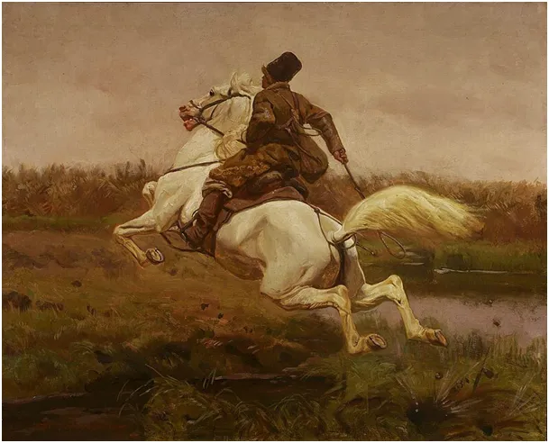
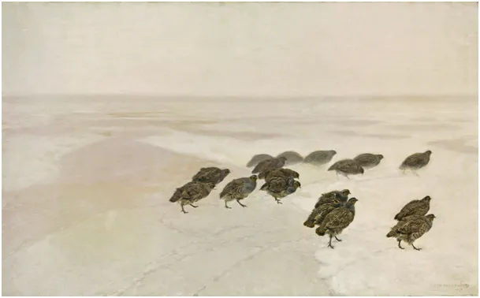
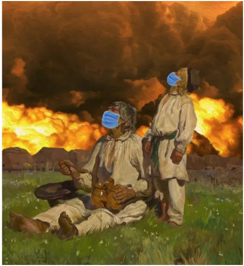
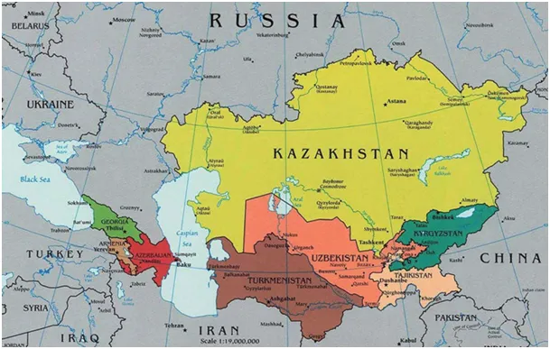
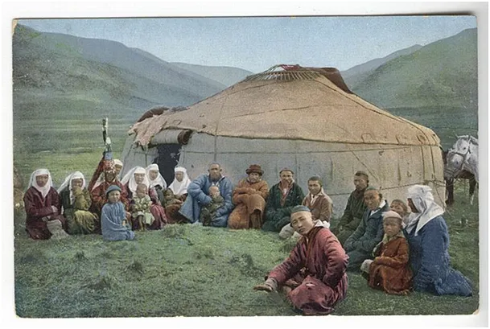
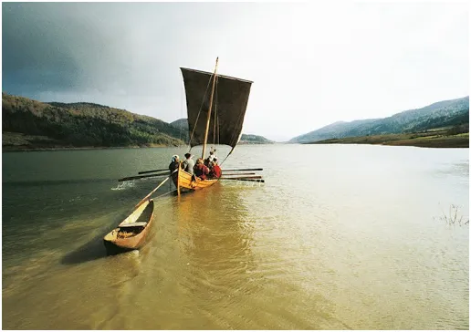
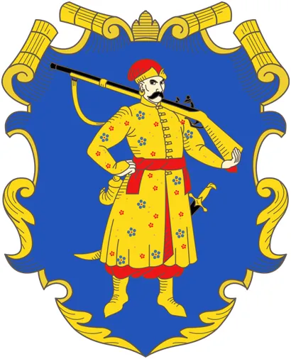

Obraz olejny w służbie meteorologii.
Poranek nie pozostawia złudzeń.

Biały, zimowy krajobraz Chełmońskiego nie jest tak znany jak setki przeróbek letniego tematu "Bociany", ale dziś przemawia do wyobraźni. Osobiście "Kozak na koniu" znany jako "Dojeżdżacz" zawsze robi na mnie wrażenie.

Kozak, wymowa turecka Kazak, to po turecku najzwyklejszy sweter zrobiony na drutach. Tureckie plemię Kazaków (Kazachów) to lud mieszkający na zimnych stepach na północ od Morza Kaspijskiego i Morza Czarnego, gruby sweter na zimę to była gwarancja przeżycia.

Kozacy są opisani jako "społeczność zorganizowana na sposób wojskowy". To oznacza po polsku, zawodowe zbójowanie. Żyli pomiędzy Imperium Osmanów, Rosją i Rzeczpospolitą.


Etnicznie bardzo zróżnicowani, słowiańscy chłopi uciekali w kozackie szeregi, by zaznać "złotej wolności". Kozackie łodzie, "Czajki" były znane nawet w Bizancjum, potrafiły szybko uciekać z łupami w górę rzek, gdzie nie mogły ich gonić duże, wojskowe okręty.

Herb Kozaków po powstaniu Chmielnickiego nie zawiera żadnych symboli religijnych, nie ma tam odwołania ani do Islamu, ani do chrześcijaństwa.

Istotą wspólnoty jest siła argumentu długiej broni palnej. Caryca Katarzyna formalnie zdelegalizowała kozaczyznę na Ukrainie, ale ten stan umysłu trwa w tej części świata, gotowy na śmierć w każdej chwili, byle z bronią w ręku.
Paweł Klimczewski